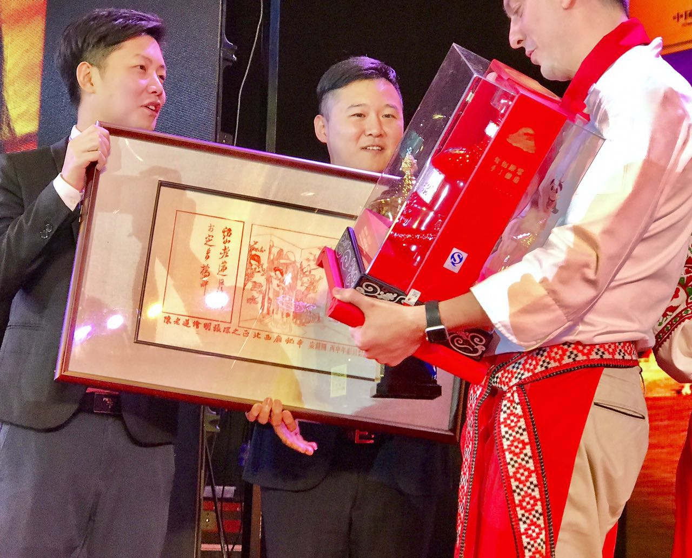
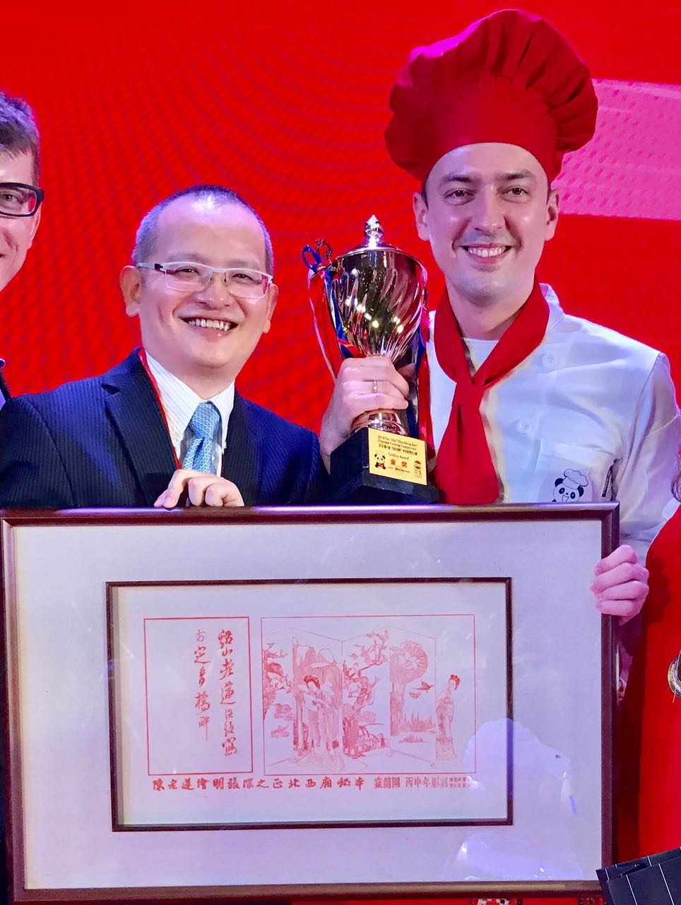
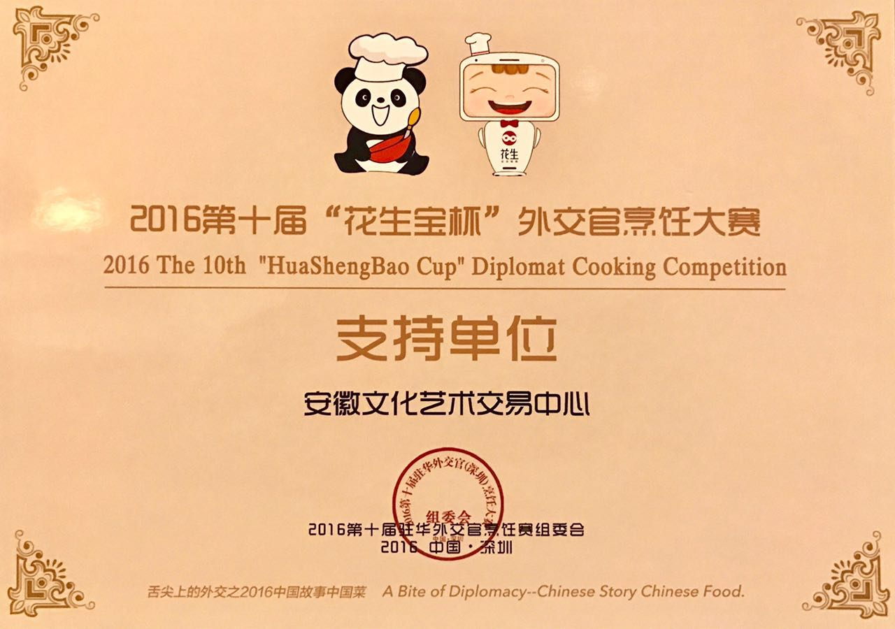

《西厢窥简图》作为第十届外交官烹饪大赛金奖颁出
2016年11月25日晚，深圳，由中国国际外交公关协会主办的第十届外交官烹饪大赛经过5小时的激烈角逐决出金银铜牌。安徽文交中心藏品《西厢窥简图》作为最珍贵的奖品颁发给了金牌得主俄罗斯选手。
来自30个国家的驻华外交官携家人，在这场主题为“中国故事中国菜”的活动中，一展中国厨艺，讲述他们的中国故事。素有“舌尖上的外交”的外交官烹饪大赛，自2006年始已经在北京、上海、香港、天津等地成功举办了9届，得到了美国、法国、英国、意大利、俄罗斯、葡萄牙、白俄罗斯、乌克兰、加拿大、芬兰、日本、韩国、德国、匈牙利、奥地利、马其顿、玻利维亚等200多家驻华大使馆和领事馆外交官的大力支持和积极参与。

安徽文交中心深圳总经理刘子腾、副总经理李越向金奖选手颁发《西厢窥简图》。

安徽文交中心顾问刘韧和俄罗斯冠军合影。
